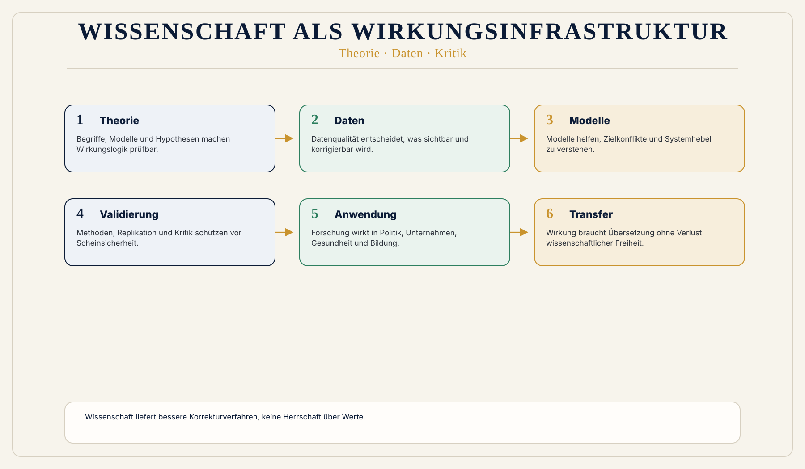

Leistung wird eng gemessen
Publikationen, Zitationen, Drittmittel, Rankings und Prestige zeigen nicht automatisch gesellschaftliche Wirkung oder Datenqualität.
 Wirkungsökonomie
Wirkungsökonomie
Für wen · Wissenschaft und Forschung
Wissenschaft ist nicht nur Wissensproduktion. Sie ist eine demokratische Wirkungsinfrastruktur.
Ohne unabhängige Forschung, belastbare Daten, replizierbare Methoden, öffentliche Statistik, Kritikfähigkeit und Unsicherheitssprache verliert eine Gesellschaft ihre Korrekturfähigkeit.
Die Wirkungsökonomie braucht Wissenschaft nicht als Dekoration, sondern als methodisches Rückgrat.
Warum diese Perspektive wichtig ist
Wissenschaft wird heute auf widersprüchliche Weise behandelt. Sie soll schnelle Antworten liefern, politische Legitimation schaffen, Innovation ermöglichen, Drittmittel einwerben, Rankings bedienen und öffentliche Debatten beruhigen.
Gleichzeitig wird sie angegriffen, instrumentalisiert oder als Meinung neben anderen Meinungen behandelt.
Die WÖk setzt anders an: Wissenschaft ist der Raum geprüfter Wirklichkeit. Sie liefert keine absolute Wahrheitshoheit, aber bessere Korrekturverfahren.
Was heute falsch läuft
Publikationen, Zitationen, Drittmittel, Rankings und Prestige zeigen nicht automatisch gesellschaftliche Wirkung oder Datenqualität.
Forschung kann exzellent wirken und trotzdem gesellschaftlich folgenlos bleiben.
Innovation kann neu sein und trotzdem negative Wirkung erzeugen.
Warum Reparatur nicht reicht
Publikationen, Zitationen und Drittmittel können wissenschaftliche Aktivität zeigen. Sie sagen aber nicht automatisch, welche Daten, Methoden, Korrekturverfahren und Erkenntnisse gesellschaftliche Entscheidungen verbessern.
Die WÖk versteht Wissenschaft als Wirkungsinfrastruktur: Forschung prüft Wirklichkeit, macht Unsicherheit sichtbar und schützt Korrekturfähigkeit.
WÖk-Verschiebung
Die WÖk fragt: Welche Forschung verändert welche Zustände? Welche Erkenntnis verbessert Entscheidungen? Welche Daten machen Risiken sichtbar? Welche Modelle helfen, Zielkonflikte zu verstehen?
Wissenschaft wird dadurch nicht nützlichkeitsverkürzt. Gerade Grundlagenforschung braucht Freiheit. Aber Forschungsförderung, Innovation und Politikberatung werden transparenter nach Wirkung, Unsicherheit, Risiko, Systemhebel und öffentlicher Relevanz gelesen.
Konkreter Gewinn
Was nicht passiert
Die WÖk macht Wissenschaft nicht zur Dienstleisterin der Politik.
Sie ersetzt Peer Review nicht durch Wirkungspunkte.
Wissenschaft liefert bessere Wirklichkeitsprüfung, keine Herrschaft über Werte.
Wirkungspfad
Konkretes Beispiel
Eine KI-Innovation kann Produktivität erhöhen. Wissenschaftlich reicht es nicht, Modellgenauigkeit oder Marktpotenzial zu messen. WÖk-Forschung fragt zusätzlich: Welche Arbeit verändert sich? Welche Bias-Risiken entstehen? Welche Energie- und Ressourcenwirkungen entstehen? Welche Machtverhältnisse werden verstärkt?
Das Messproblem
Im Wissenschaftsbetrieb ist „Impact" heute meist eine bibliometrische Größe: Zitationen, Journal-Rankings, h-Index. Diese Kennzahlen messen Resonanz innerhalb der Wissenschaft, nicht Wirkung außerhalb.
Die Third Mission, also der gesellschaftliche Transfer neben Forschung und Lehre, bleibt dadurch strukturell unsichtbar: Politikberatung, Standardarbeit, Datenkuratierung, Wissenschaftskommunikation und regionale Kooperationen zählen in Evaluationen wenig, obwohl dort ein großer Teil der gesellschaftlichen Wirkung entsteht.
Wer nur zählt, was zitiert wird, steuert Forschung an ihrer gesellschaftlichen Wirkung vorbei.
Verschiebung konkret
Der Wirkungspfad, also die nachvollziehbare Kette von einer Maßnahme über Zustandsveränderungen bis zur Wirkung auf Mensch, Planet und Demokratie, ist ein prüfbares Objekt: Annahmen, Kausalität, Messbarkeit und Unsicherheit lassen sich disziplinenübergreifend untersuchen.
Begriff WirkungspfadDie WÖk arbeitet mit Wirkungsindikatoren und gestuften Datenqualitätsklassen, von belastbaren Primärdaten bis zu groben Schätzwerten. Welche Indikatoren tragen, wo Datenlücken liegen und wie Unsicherheit ausgewiesen wird, sind offene methodische Fragen an die Forschung.
Begriff DatenqualitätDie Systematik ist anschlussfähig an ESRS und GRI, also die europäischen und internationalen Berichtsstandards, sowie an das SDG-Monitoring der UN-Nachhaltigkeitsziele. Wer dort forscht, findet in der WÖk ein Mapping-Feld statt eines Parallelsystems.
ESG-zu-WÖk-Mapping ansehenMitwirkung
Die Wirkungsökonomie ist ein offenes Modell im Aufbau. Kritik, Replikation und methodische Prüfung sind erwünscht, nicht nur geduldet.
Der Begriffsleitfaden und die Indikatorik sind öffentlich dokumentiert. Fachliche Einwände, Schärfungen und Gegenvorschläge fließen in die Weiterentwicklung ein.
Begriffsleitfaden öffnenDer Forschungs-Wirkungscheck und der Open-Science- und Replikationscheck zeigen, wie die WÖk Forschungswirkung und Überprüfbarkeit selbst strukturiert. Eigene Fallstudien zu Wirkungspfaden, wahren Preisen oder Scorecards sind ausdrücklich willkommen.
Forschungs-Wirkungscheck öffnenDie WÖk-Akademie stellt Studienmaterialien, Skripte und Selbsttests bereit, die sich für Seminare, Fallübungen und interdisziplinäre Lehrformate nutzen lassen.
Akademie ansehenEinstiege
Grundlagenpapiere, Whitepaper und das Standardwerk als Quellenbasis für eigene Arbeiten.
Bibliothek öffnenDer führende Begriffsleitfaden mit den definierten Fachbegriffen der Wirkungsökonomie.
Glossar öffnenKontakt für Kooperationen, Fallstudien, Reviews und gemeinsame Lehrformate.
Kontakt und MitmachenVisual
Drei Ebenen: Erkenntnis, Daten, Korrektur. Dazu Rückkopplung in Politik, Unternehmen, Gesundheit, Bildung, KI und Öffentlichkeit.

Vertiefung
Die nächste Frage lautet nicht, wie diese Zielgruppe nachhaltiger wird. Sie lautet: Welche alte Steuerungslogik erzeugt das Problem, und wie verändert Wirkung die Logik selbst?
Quellenbasis / Einordnung